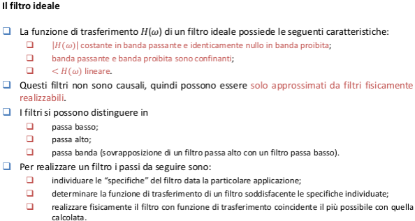

Le tecniche di individuazione guasti basate sul modello di segnale richiedono il filtraggio dello stesso per poter ottenere buoni risultati (e.g. il filtraggio a banda passante, prefiltraggio perl’analisi della correlazione, filtri multipli per l’analisi delle vibrazioni, ecc ...).
Il filtraggio, inoltre, può essere visto come parte integrante del condizionamento del segnale ed è sempre richiesto per aumentare il contenuto informativo dei segnali provenienti dai sensori.



digitalizzazione di un filtro: invarianza risposta impulsiva, sostituzione derivata con diffrenze all'indietro, trasformazione bilineare